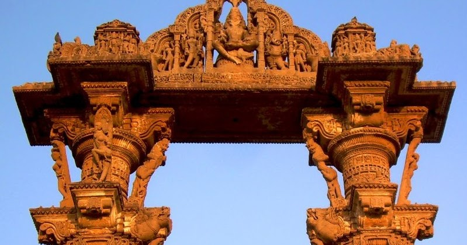

The town is famous for its torans, a pair of 12th century columns supporting an arch, about 40 feet tall built in red and yellow sandstone, just north of the walled town. They stand majestically on the bank of Sharmistha Talav, on a road going down from Arjun Bari. They are among the few surviving examples of the entrance gates, once a regular feature of the architecture of Gujarat in the Solanki period. The carving style is similar to the Rudra Mahalaya at Sidhpur.
Perhaps erected after a war victory, the architecture is embellished with carvings of battle and hunting scenes. The one to the east is in better condition and has been used as a symbol of Gujarat in recent times. The torans might have served as an entrance to a large temple complex, but there are no remains found here.

How to Get There?
By Road
Mehsana (47 km), Ahmedabad (111 km). Local Transport: Non-metered auto rickshaws.
By Train
Siddhapur is a railway station on Ahmedabad - New Delhi railway line, 42 km from Vadnagar.